In addition to duplexed CPU Units and Power Supply Units, the customer can duplex other components, such as Communications Units (Controller Link or Ethernet) and Expansion Cables, to match the system requirements and provide a diverse range of duplex system configurations.
Building Automation
Industrial Automation
Power Automation & Safety


Bangladesh Distributor
CS1D
CS1D Overview
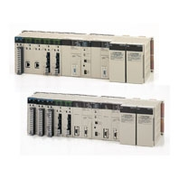
Redundant CPU Units, Power Supply Units, Communications Units, and Expansion I/O Cables
about this Product Family
Related Contents
- Automation Systems
- Programmable Controllers
- Features
- Lineup
- Specifications
- Dimensions
- Catalog
last update: May 11, 2015
With the CS1D, you can select from a variety of redundant systems.
The CS1D supports a variety of network configurations.
Ethernet can be duplexed as well as Controller Link, which both have a proven track record in FA applications.
In addition, a variety of networks are available for lower-level I/O, including DeviceNet, CompoNet, and the MECHATROLINK-II Motion Controller network. Both DeviceNet and CompoNet are open networks that boast a proven track record with the CS1 Series.
With the CS1D, a highly reliable system can be introduced easily.
Of course, the standard CS-series PLC resources can be used as-is, and a CS1D Duplex System can be set up and used easily, even by users setting up a duplex system for the first time.
Duplexing CPU Units is Easy!
In OMRON's proprietary hot-standby method, all data is shared simultaneously.
- If an error occurs in the active CPU Unit, a switching program is not needed in the standby CPU Unit!
- CPU Unit operation switches smoothly. Switching time is short, so operation can continue without bumps.
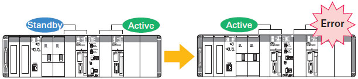
OMRON's proprietary hot-standby method
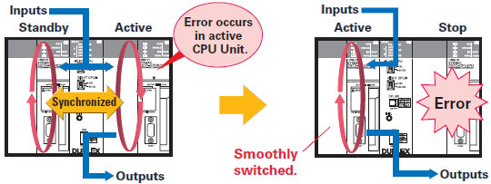
Since the active and standby CPU Units always operate synchronously, control continues automatically and continuously in the standby CPU Unit if an error occurs in the active CPU Unit.
Unsynchronized duplex method
The standby CPU Unit is normally stopped. If an error occurs in the active CPU Unit, the standby CPU Unit becomes the active CPU Unit. The transfer between CPU Units is limited and control is discontinuous due to initialization during the switch-over.
Duplexing Communications Units is Easy!
The CPU Unit automatically selects the normally functioning Communications Unit.
- When an error occurs, it is not necessary to use a complex switching program or special data link area for duplexing!
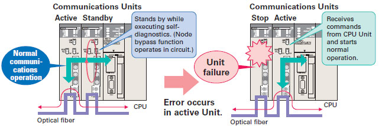
Note : The figure shows duplexing Controller Link Units. For details on wiring optical fiber cables, refer to the CS1W-CLK12-V1/CLK13/CLK52-V1/CLK53, CVM1-CLK12/CLK52 Optical Ring Controller Link Units Operation Manual (Cat. No. W370)
When Ethernet Units are used, complex switching programs for message communications can be simplified.
Typical duplex program
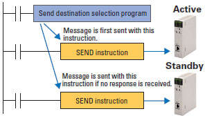
OMRON duplex program
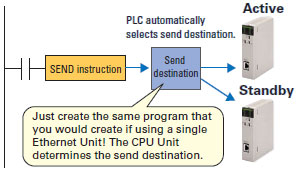
When using a Controller Link Unit, data link area allocations can be configured without waste.
Typical duplex program
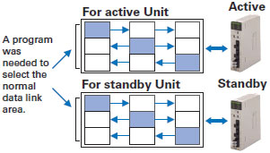
OMRON duplex program
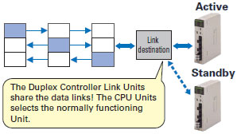
New Release! The Ultimate Duplex "Dual I/O Expansion" System
The newly released Duplex CPU, Dual I/O Expansion system draws attention in the maintenance field! This system answers the needs of users who want to make improvements and add functions without stopping the equipment. This strengthens the proven CS1D Duplex System even more.
The functions in this section are supported only in a Duplex CPU, Dual I/O Expansion System.
Equipped with New Functions for Maintenance!
Special Programming Devices and Displays are not required for Online Unit Replacement.
- A computer is not needed for onsite operations!
- Units can be replaced without knowing Programming Device procedures!
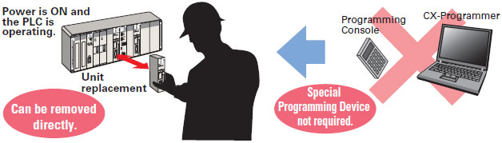
Units and Expansion Backplanes can be added online.
- Functions can be added easily after the system has started operating, even if the system cannot be turned OFF or stopped.
- Adjustments and improvements can be easily made when setting up new systems without turning OFF the power.
While online, a Unit can be added easily to an empty slot. (This function is supported in Duplex CPU Single I/O Expansion Systems and Duplex CPU Dual I/O Expansion Systems.)
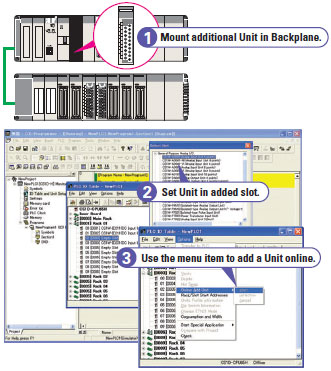
In addition, an Expansion Backplane as well as its mounted Units can be added easily.
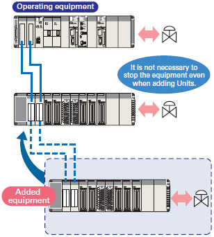
Even Stronger Redundancy!
Expansion Cables can be duplexed and Units can be replaced Online.
By duplexing the Expansion Units and Expansion Cables, the Expansion Cables are duplexed and can be replaced during operation. In addition, cable disconnections are monitored so failures can be located easily.
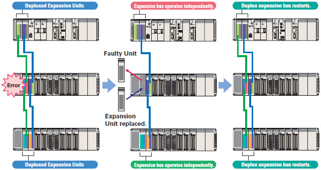
Duplex Units can be replaced online.
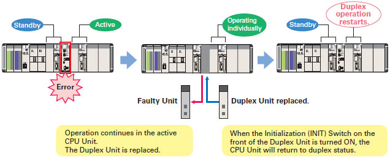
PLC-based Process Control System for Full-scale Process Control
A PLC-based Duplex Process Control System That Achieves High Reliability
A variety of system configurations can be created, such as a Duplex CPU System using a CS1D Process-control CPU Unit with a built-in Loop Control Board (LCB) function or a Single CPU System using a Loop Control Board mounted in the CS1D CPU Unit's Inner Board slot. You can retain the openness and cost performance of a general-purpose PLC base while expanding the possible range of PLC control with process control functions and reliability that are equivalent to some of the functions and performance of DCS.
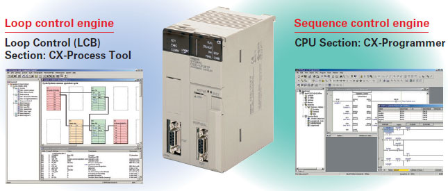
A Process Control System can be built based on PLCs, breaking the image of traditional process controllers. A system configuration can be created to match the applications and customer's system requirements.
Previous System Issues
Initial costs are high because a large-scale system must be used.
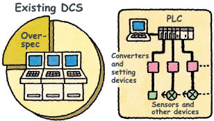
PLC-based Process Control Solution
[Down-sizing]
Using the PLC base saves cost, space, and time.
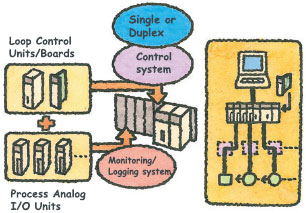
last update: May 11, 2015